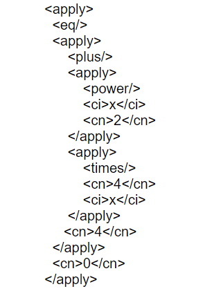
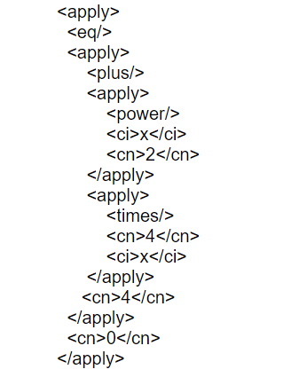

MathML står for Mathematical Markup Language som er markup språk som er ett tegnsystem basert på XML tagger for å beskrive matematisk innhold og struktur. Det har vært standard i HTML5 siden 2015.
HTMl har ikke tagger for matte så derfor bruker vi dette.
Dette er brukt fordi nettlesere kan generere dette rett inn i nettlesern.
Eksempel: Vi har ligningen x2 + 4x + 4 =0. Dette kan vi løse på denne måten med MathML.
 
Kilde

Kilde